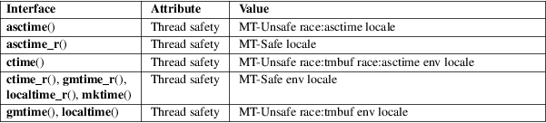

asctime, ctime, gmtime, localtime, mktime, asctime_r, ctime_r, gmtime_r, localtime_r − transform date and time to broken-down time or ASCII
Standard C library (libc, −lc)
#include <time.h>
char
*asctime(const struct tm *tm);
char *asctime_r(const struct tm *restrict tm,
char buf[restrict 26]);
char
*ctime(const time_t *timep);
char *ctime_r(const time_t *restrict timep,
char buf[restrict 26]);
struct tm
*gmtime(const time_t *timep);
struct tm *gmtime_r(const time_t *restrict
timep,
struct tm *restrict result);
struct tm
*localtime(const time_t *timep);
struct tm *localtime_r(const time_t *restrict
timep,
struct tm *restrict result);
time_t mktime(struct tm *tm);
Feature Test Macro Requirements for glibc (see feature_test_macros(7)):
asctime_r(),
ctime_r(), gmtime_r(), localtime_r():
_POSIX_C_SOURCE
|| /* glibc <= 2.19: */ _BSD_SOURCE || _SVID_SOURCE
The ctime(), gmtime(), and localtime() functions all take an argument of data type time_t, which represents calendar time. When interpreted as an absolute time value, it represents the number of seconds elapsed since the Epoch, 1970-01-01 00:00:00 +0000 (UTC).
The asctime() and mktime() functions both take an argument representing broken-down time, which is a representation separated into year, month, day, and so on.
Broken-down time is stored in the structure tm, described in tm(3type).
The call ctime(t) is equivalent to asctime(localtime(t)). It converts the calendar time t into a null-terminated string of the form
"Wed Jun 30 21:49:08 1993\n"
The abbreviations for the days of the week are "Sun", "Mon", "Tue", "Wed", "Thu", "Fri", and "Sat". The abbreviations for the months are "Jan", "Feb", "Mar", "Apr", "May", "Jun", "Jul", "Aug", "Sep", "Oct", "Nov", and "Dec". The return value points to a statically allocated string which might be overwritten by subsequent calls to any of the date and time functions. The function also sets the external variables tzname, timezone, and daylight (see tzset(3)) with information about the current timezone. The reentrant version ctime_r() does the same, but stores the string in a user-supplied buffer which should have room for at least 26 bytes. It need not set tzname, timezone, and daylight.
The gmtime() function converts the calendar time timep to broken-down time representation, expressed in Coordinated Universal Time (UTC). It may return NULL when the year does not fit into an integer. The return value points to a statically allocated struct which might be overwritten by subsequent calls to any of the date and time functions. The gmtime_r() function does the same, but stores the data in a user-supplied struct.
The localtime() function converts the calendar time timep to broken-down time representation, expressed relative to the user’s specified timezone. The function acts as if it called tzset(3) and sets the external variables tzname with information about the current timezone, timezone with the difference between Coordinated Universal Time (UTC) and local standard time in seconds, and daylight to a nonzero value if daylight savings time rules apply during some part of the year. The return value points to a statically allocated struct which might be overwritten by subsequent calls to any of the date and time functions. The localtime_r() function does the same, but stores the data in a user-supplied struct. It need not set tzname, timezone, and daylight.
The asctime() function converts the broken-down time value tm into a null-terminated string with the same format as ctime(). The return value points to a statically allocated string which might be overwritten by subsequent calls to any of the date and time functions. The asctime_r() function does the same, but stores the string in a user-supplied buffer which should have room for at least 26 bytes.
The mktime() function converts a broken-down time structure, expressed as local time, to calendar time representation. The function ignores the values supplied by the caller in the tm_wday and tm_yday fields. The value specified in the tm_isdst field informs mktime() whether or not daylight saving time (DST) is in effect for the time supplied in the tm structure: a positive value means DST is in effect; zero means that DST is not in effect; and a negative value means that mktime() should (use timezone information and system databases to) attempt to determine whether DST is in effect at the specified time.
The mktime() function modifies the fields of the tm structure as follows: tm_wday and tm_yday are set to values determined from the contents of the other fields; if structure members are outside their valid interval, they will be normalized (so that, for example, 40 October is changed into 9 November); tm_isdst is set (regardless of its initial value) to a positive value or to 0, respectively, to indicate whether DST is or is not in effect at the specified time. Calling mktime() also sets the external variable tzname with information about the current timezone.
If the specified broken-down time cannot be represented as calendar time (seconds since the Epoch), mktime() returns (time_t) −1 and does not alter the members of the broken-down time structure.
On success, gmtime() and localtime() return a pointer to a struct tm.
On success, gmtime_r() and localtime_r() return the address of the structure pointed to by result.
On success, asctime() and ctime() return a pointer to a string.
On success, asctime_r() and ctime_r() return a pointer to the string pointed to by buf.
On success, mktime() returns the calendar time (seconds since the Epoch), expressed as a value of type time_t.
On error, mktime() returns the value (time_t) −1. The remaining functions return NULL on error. On error, errno is set to indicate the error.
EOVERFLOW
The result cannot be represented.
For an explanation of the terms used in this section, see attributes(7).

POSIX doesn’t specify the parameters of ctime_r() to be restrict; that is specific to glibc.
In many implementations, including glibc, a 0 in tm_mday is interpreted as meaning the last day of the preceding month.
According to POSIX.1-2001, localtime() is required to behave as though tzset(3) was called, while localtime_r() does not have this requirement. For portable code, tzset(3) should be called before localtime_r().
asctime()
ctime()
gmtime()
localtime()
mktime()
C11, POSIX.1-2008.
asctime_r()
ctime_r()
gmtime_r()
localtime_r()
POSIX.1-2008.
gmtime()
localtime()
mktime()
C89, POSIX.1-2001.
asctime()
ctime()
C89, POSIX.1-2001. Marked obsolete in POSIX.1-2008 (recommending strftime(3)).
gmtime_r()
localtime_r()
POSIX.1-2001.
asctime_r()
ctime_r()
POSIX.1-2001. Marked obsolete in POSIX.1-2008 (recommending strftime(3)).
The four functions asctime(), ctime(), gmtime(), and localtime() return a pointer to static data and hence are not thread-safe. The thread-safe versions, asctime_r(), ctime_r(), gmtime_r(), and localtime_r(), are specified by SUSv2.
POSIX.1-2001 says: "The asctime(), ctime(), gmtime(), and localtime() functions shall return values in one of two static objects: a broken-down time structure and an array of type char. Execution of any of the functions may overwrite the information returned in either of these objects by any of the other functions." This can occur in the glibc implementation.
date(1), gettimeofday(2), time(2), utime(2), clock(3), difftime(3), strftime(3), strptime(3), timegm(3), tzset(3), time(7)